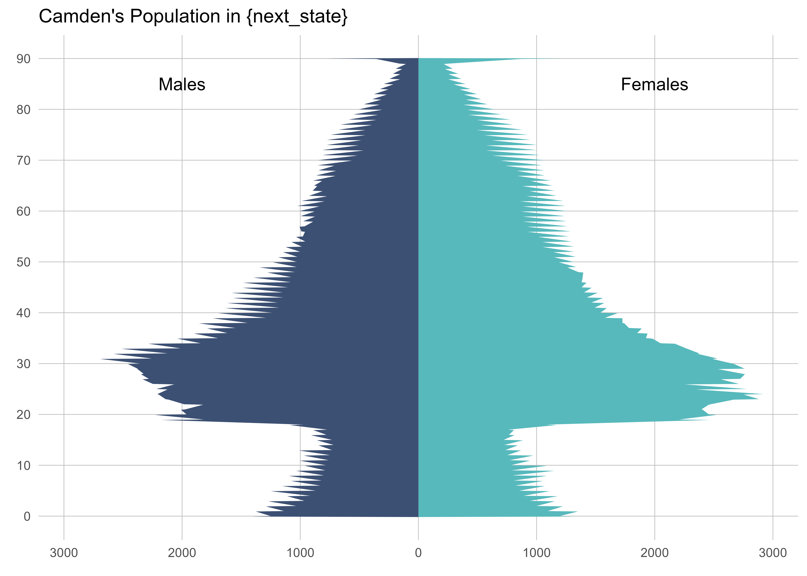
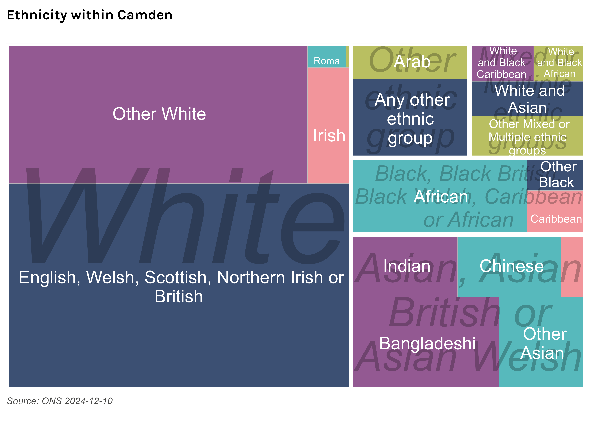
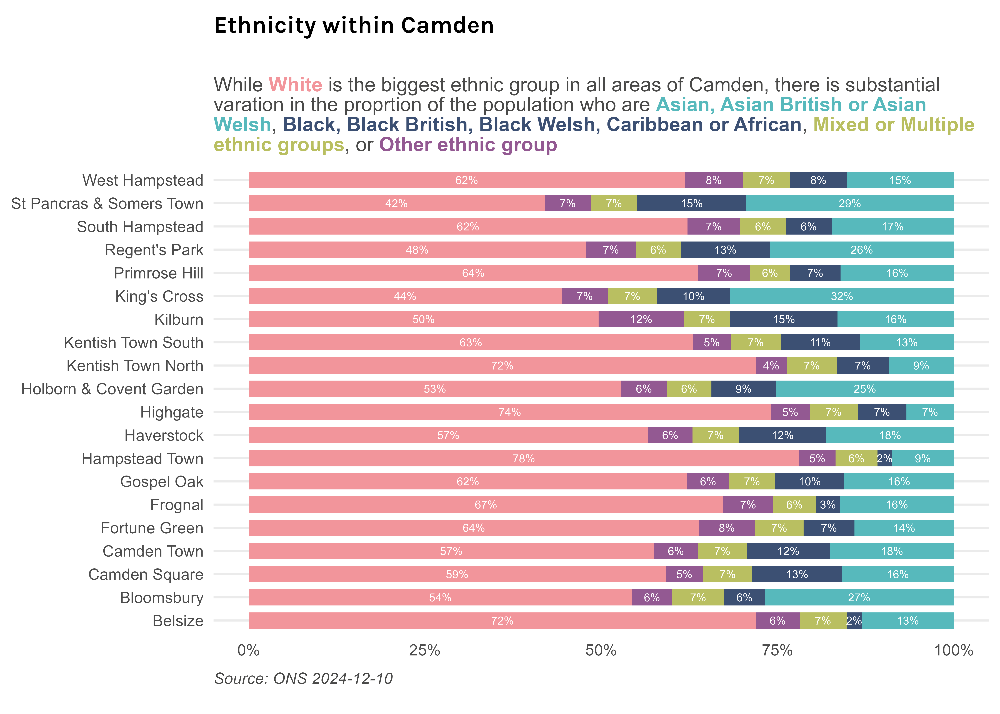

Introduction
Camden’s JSNA
This is JSNA summary is a concise summary of the demographics of residents of Camden. It presents data on the size and structure of the population and a range of groups within it, for example different ethnic groups.
::: {.callout-tip} Camden’s Joint Strategic Needs Assessment explores the health and wellbeing of the borough’s residents and highlights areas of good practice and where opportunities to do more exist, including tacking inequalities. The JSNA helps public bodies decide what type of local services to commission. :::
Population
Camden’s population has fallen but is expected to rebound
Camden’s population slowly fell until around 2020 when it started to increase again, with further rises predicted. While the size of the population has fluctuated by relatively small amounts, the individuals that comprise the population change frequently with Camden having a high rate of migration within the UK and internationally.
Note on the 2021 Census
Prior to the 2021 Census Camden was estimated to have a population of around 280,000 based on projections from the 2011 Census. The 2021 Census found the population was substantially lower. This may have happened for a number of reasons, such as temporary relocation away from the borough during the Covid-19 pandemic with some evidence this is now reversing. [1] While adjustments have been made by ONS, including backdating some population estimates, it can be unclear when indicators are using the high or low version of the population and consequently there can be substantial variation in some indicators depending on source, version, or between time periods even where there has been little change in the count of a metric.
Camden’s population is ageing, though young adults will remain the largest group
The composition of Camden’s population has changed considerably and this is expected to continue. Between 2013 and 2023 the proportion of residents aged under 18 fell from 17.5328986% to 16.3867959% and it is expected to fall further to 13.9797361% by 2041. Conversely, the proportion of residents aged 65 and over is expected to rise from 11.8595275% in 2023 to 16.3119058% by 2041. The proportion of the population of working is age is expected to remain relatively constant.
Ethnicity
Camden’s is one of the most diverse places in the country, though the majority of the population identify as White

Around 60% of Camden’s population is White, with White British comprising 40%. Outside of the White ethnic group Camden’s population is comprised of Asian, Asian British or Asian Welsh (20%), Black, Black British, Black Welsh, Caribbean or African (9%), Mixed or Multiple ethnic groups (7%), and Other ethnic group (7%) broad ethnic groups with Bangladeshi (7%), and African (7%) being particularly large groups within these.
Ethnicity varies substantially within Camden, with some areas being much more diverse than others
